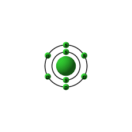

Numero atomico: 8
Massa atomica: 16,00
Temperatura di fusione (°C): -219
Temperatura di ebolizione (°C): -183
Energia di prima ionizzazione (kj/mol): 1314
Elettronegatività (secondo Pauling): 3,44
Densità: 1,43
Numeri di ossidazione: -2
Configurazione elettronica: 1s2, 2s2, 2p4
Maggiori Informazioni